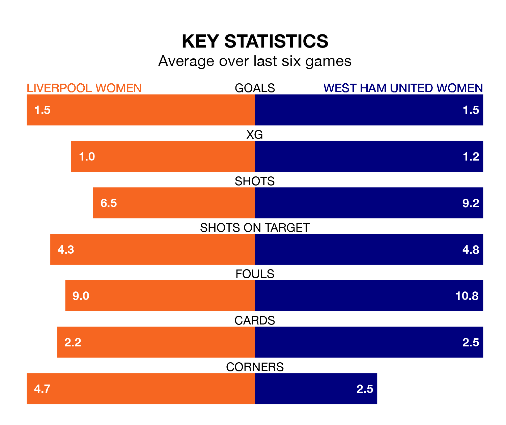

West Ham United Women travel to Liverpool Women on Sunday lunchtime in the FA Women's Super League.
The visitors come into the game on the back of a draw in their last match, having tied with Manchester United Women 1-1 at home, with a goal from Viviane Asseyi.
Liverpool, meanwhile, won their last match, 4-1 against Aston Villa Women, with their goals scored by Emma Koivisto, Sophie Roman Haug and Grace Fisk.
West Ham United are 11th in the table after 15 games, of which they have won three and drawn three, earning 12 points.
Liverpool are six places ahead of the Hammers in fifth, with seven wins and four draws putting them on 25 points.
In the last 10 years, Liverpool and West Ham United have played each other on eight occasions. Liverpool won three of them, West Ham United two, and they drew three times.
On average, Liverpool scored 1.0 goal and the Hammers 0.9 in those matches.
Their last meeting was on October 22, when they played out a 1-1 draw.
With 16 goals in 15 games so far this season, the visitors are the league's second-lowest scorers with 1.1 goals per game. And they are conceding more than average, letting in 30 goals at a rate of 2.0 per game.
The home team are also below average scorers, with 1.5 goals per game, compared to a league average of 1.7. They have conceded 1.3 goals per game.
With Rachael Laws between the sticks, Liverpool can rely on one of the league's safest pair of hands. She has kept three clean sheets in her 11 appearances this season in the FA Women's Super League.
In West Ham United's net, Mackenzie Arnold has one clean sheet in 12 games. She has conceded a goal every 49 minutes, 70% more often than the 83 minutes between goals for Laws.
Liverpool are in mixed form in the FA Women's Super League, with three wins and a draw from their last six games.
With two wins and two draws over that period, West Ham United's form is slightly worse – they have taken eight points from 18, compared to the hosts' 10.
Updated: 09:34 (UTC), 08/03/24